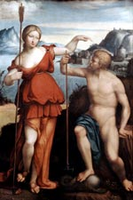

Посейдон, в давньогрецькій міфології бог підводного царства. Посейдон вважався владикою морів і океанів. Підводний цар народився від шлюбу богині землі Реї і титану Кроноса і відразу після народження був разом зі своїми братами і сестрами проковтнув батьком, який боявся, що вони скинуть його панування над світом. Всіх їх звільнив згодом Зевс.
Посейдон жив у підводному палаці, серед сонму слухняних йому богів. У їх числі був його син Тритон, нереїди, сестри Амфітрити та багато інших. Бог морів дорівнював по красі самому Зевсу. По морю він пересувався на колісниці, в яку були упряжені чудові коні.
За допомогою чарівного тризуба Посейдон керував морською безоднею: якщо на море був шторм, то варто було йому простягнути перед собою тризуб, як сказився море заспокоювалося.
Стародавні греки дуже шанували це божество і, щоб досягти його розташування, приносили підводному владиці безліч жертв, кидаючи їх у море. Це було дуже важливо для жителів Греції, так як їх добробут залежав від того, чи пройдуть торгові кораблі по морю. Тому, перш ніж вийти в море, мандрівники кидали в воду жертву Посейдону. У римській міфології йому відповідає Нептун.